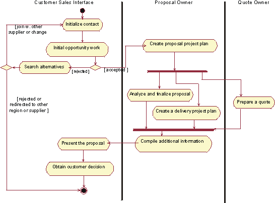
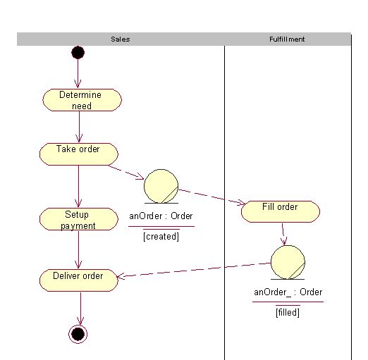
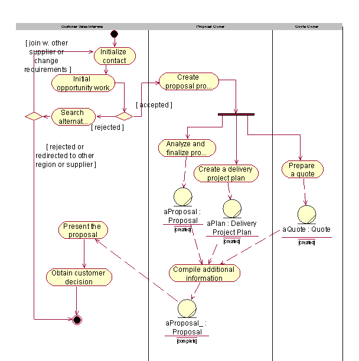

Artifacts >
Artifacts >
 Business Modeling Artifact Set >
Business Modeling Artifact Set >
 Business Object Model... >
Business Object Model... >
 Business Object Model >
Business Object Model >
 Guidelines >
Activity Diagram in the Business Object Model
Guidelines >
Activity Diagram in the Business Object Model
Artifacts >
Business Modeling Artifact Set >
Business Object Model... >
Business Object Model >
Guidelines >
Activity Diagram in the Business Object Model
Guidelines:
|
Activity Diagram |
An activity diagram in the business object model illustrates the workflow of a business use-case realization. |
The activity diagram notation is further explained in Guidelines: Activity Diagram in the Business Use-Case Model. This page exemplifies how the notation is applied to describe a business use-case realization.
An activity diagram of a business use-case realization explores the ordering of tasks or activities that accomplish business goals, and that satisfy commitments between external business actors and internal business workers. An activity may be a manual or automated task that completes a unit of work.
Activity diagrams help:
Compared to a sequence diagram, that could be perceived as having a similar purpose, an activity diagram with swimlanes and object flows focuses on how you divide responsibilities into classes, whereas the sequence diagram helps you understand how objects interact and in what sequence. Activity diagrams focus on the workflow, while sequence diagrams focus on handling business entities. Activity diagrams and sequence diagrams could be used as complementary techniques, where a sequence diagram shows what happens in an activity state.
If you are using swimlanes and the swimlanes are coupled to classes (mainly business workers) in the business object model, you are using the activity diagram to document business use-case realizations, rather than business use cases.
As an example, we show an activity diagram of the realization of the business use case Proposal process, which you can find described Guidelines: Business Use Case.

The realization of the business use case Proposal Process
The activity diagram provides the details of what happens within the business by examining people playing specific roles (the business workers) and the activities they perform. For application-development projects, these diagrams provide a detailed understanding of the business area that will be supported or impacted by the new application. They help establish connection points to the proposed new system, and these connection points give rise to system use cases.
In this context, object flows are used to show how business entities are created and used in a workflow. Object flows allow you to show inputs and outputs from activity states in an activity graph. There are two elements to the notation:
The object flow symbol represents the existence of an object in a particular state, not just the object itself. The same object can be manipulated by a number of successive activities that change the object's state. The object can then be displayed multiple times in an activity graph, with each appearance representing a different state during its life. The object’s state at each point may be placed in brackets and appended to the name of the class.

A generic sales process presented using object flows to show how an order changes it state while executing the workflow. See Guidelines: Activity Diagram in the Business Use-Case Model
An object flow state may appear as the target of one object flow (transition) and the source of multiple object flows (transitions).

An activity diagram for the Proposal process, using object flows to show key business entities involved
Object flows can be compared to data flows within the workflow of a business use case. Unlike traditional data flows, however, object flows exist at a definite point within an activity graph.
|
Rational Unified
Process
|